How it works
No black boxes. This is the whole pipeline, the same way it runs on the bench — four steps, and your judgment stays in charge of every one of them.
Sort your sample into a tray the way you already do, and take a photo of it — an ordinary camera under ordinary bench light. The photo is the input; nothing about your workflow changes to feed the app.
NymphCount goes over the photo and marks every specimen it finds, one mark per animal, and totals them. Every mark sits on the photo where the specimen is, so you can see exactly what was counted — and what wasn’t.
Each counted specimen is sorted into its group — the kinds the water-quality indices are built from. Specimens that can’t be settled are set aside as unsorted rather than guessed into a group. You review the tray, tap to correct anything you read differently, and your correction and the original count stay side by side on the record.
From the verified tally, NymphCount computes the indices and lays out the full tally sheet — every group, its members, and the totals — ready for your notebook or your analysis.
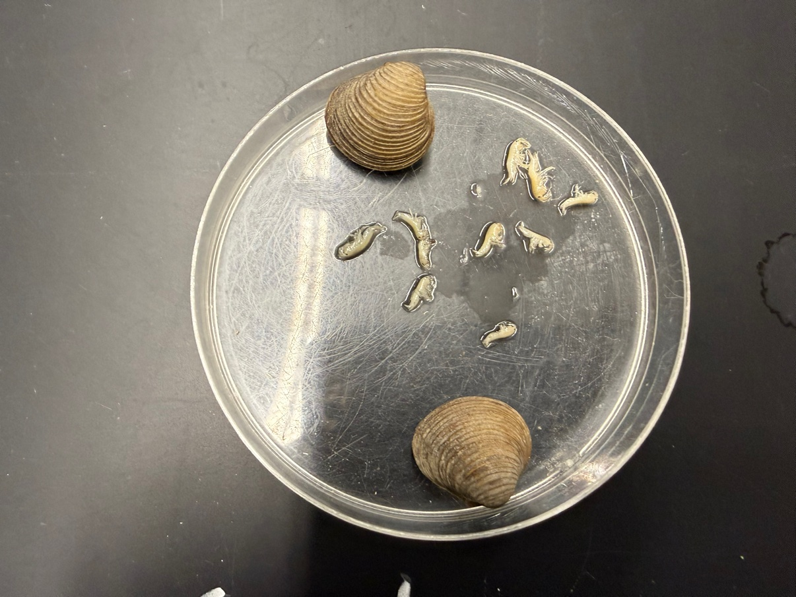
The indices
Each group carries a tolerance value for organic pollution; HBI weighs your tally by those values into one score that reads as water quality.
The share of your sample made up of mayflies, stoneflies, and caddisflies — the groups most sensitive to pollution. A healthy stream’s sample leans heavily on them.
How many distinct mayfly, stonefly, and caddisfly kinds are present. Sensitive kinds disappear first when water quality slips, so their variety is a signal in itself.
The letter key
These are the groups behind the letters — the same table the app sorts by, in the app’s own colours. Three of them are marked: A, B, and C together are the EPT core, the clean-water kinds the indices lean on hardest.
Nymphs breathe through feathery gills along the abdomen and usually carry three tails. They are among the first animals to disappear when water quality slips.
Two-tailed nymphs that need cold, well-oxygenated water to live. A stream that holds stoneflies is a stream in good shape.
Larvae that build portable cases out of sand grains, twigs, or leaf bits, and carry their shelter with them.
Midge larvae and their kin — including the red bloodworms of the sediment. Many tolerate pollution that empties a stream of everything else.
Small, shrimp-like swimmers, flattened side-to-side and curled like a comma. They shred dead leaves and feed much of the stream.
Flattened, many-legged crawlers — the water’s answer to the woodlouse — grazing and scavenging along the bottom.
The stream’s small lobsters: burrowers and scavengers, and food for nearly everything bigger.
Grazers that rasp algae and biofilm off the stones, carrying a coiled or cone-shaped shell with them.
Two-shelled filter feeders, half-buried in the sediment, sifting their food from the water that passes over them.
Soft, segmented swimmers with a sucker at each end. Many hunt snails and worms; a few take blood where they can get it.
Slender, segmented worms — often red — that live in the mud and wave their tails in the current. In great numbers, a classic sign of organically rich water.
Ambush predators long before they ever fly: the nymphs hunt from the bottom with a hinged, extendable jaw.
Riffle beetles walk the streambed underwater while diving beetles row across it — hard-winged grazers and hunters.
Large larvae with strong jaws and a fringe of fleshy filaments down each side. The hellgrammite is the biggest animal in most trays.
Water boatmen, backswimmers, water scorpions, and giant water bugs — air-breathing hunters and grazers at the surface and below it.
Soft, unsegmented planarians that glide over the stones, feeding on smaller animals as they go.
Tiny water mites — round, eight-legged, often bright red — swimming and crawling among the plants and the sediment.
Not a group at all: the honest holding place for a specimen that hasn’t been keyed yet. It wears the grey 0 until someone calls it — it is never guessed into a letter.
The specimen gallery
Real animals, really photographed — one portrait per letter. One is Levi’s own bench photography; the rest are openly licensed field photographs, each credited to its photographer. The gallery shows the kinds themselves, nothing more.
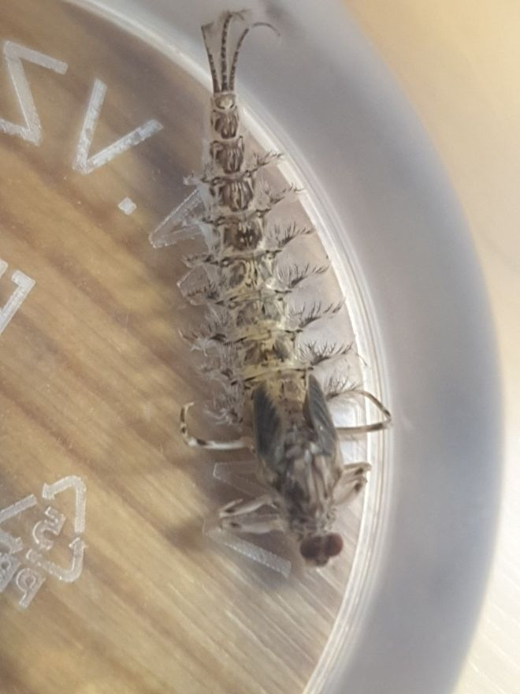
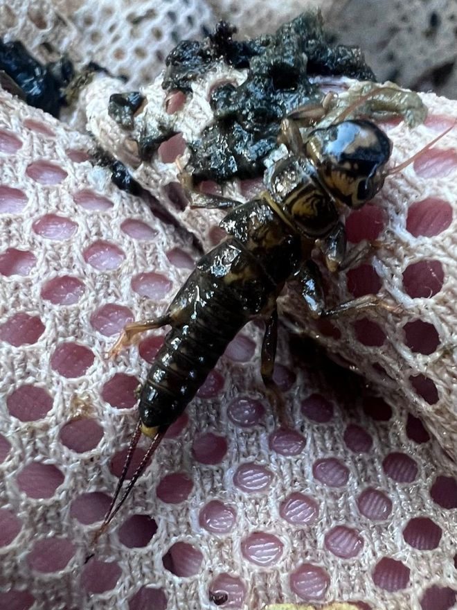
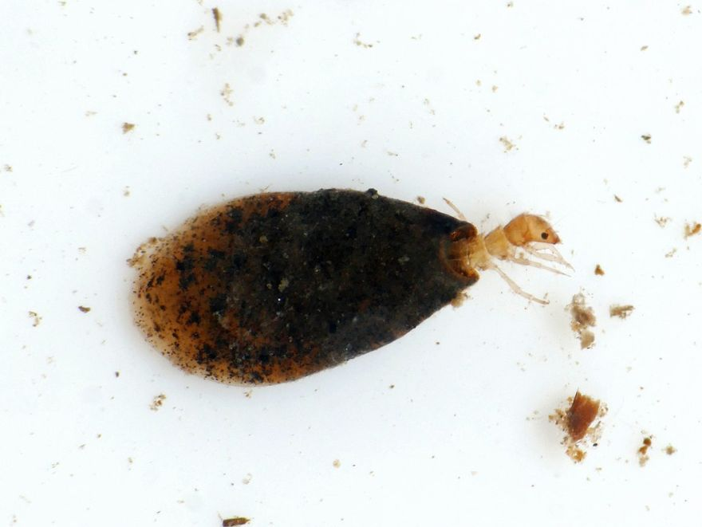
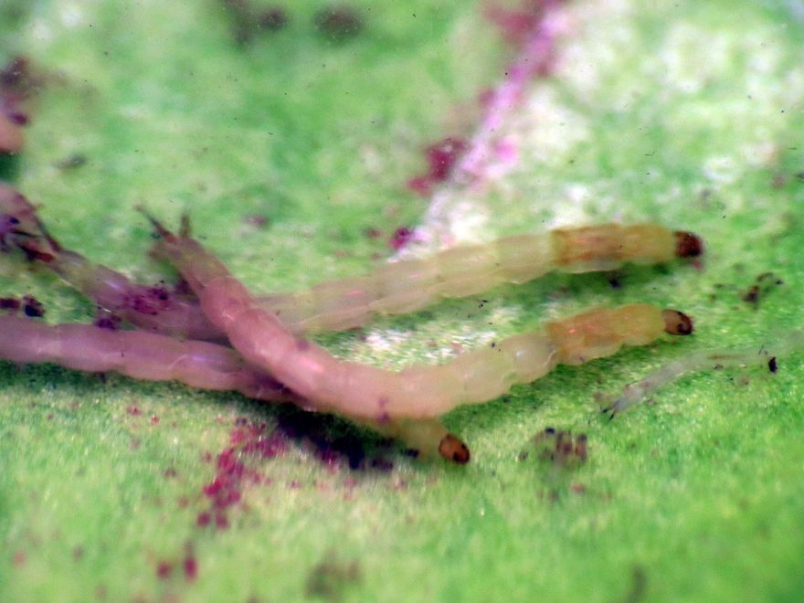
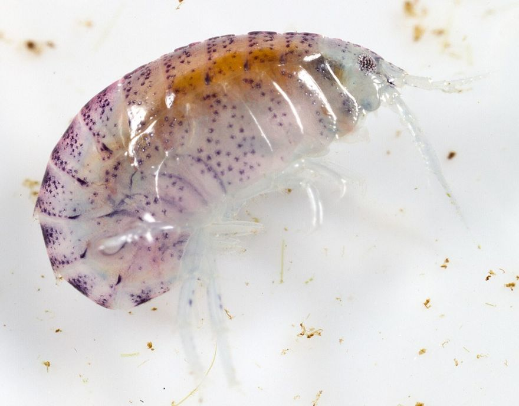
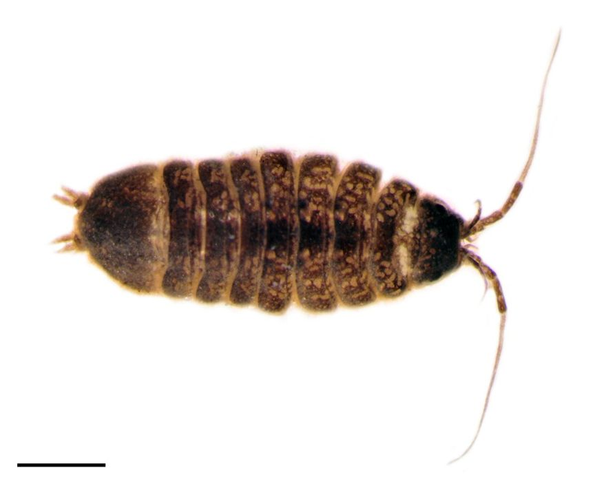
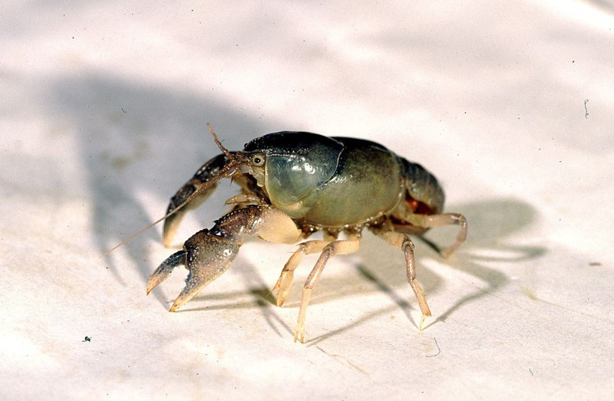
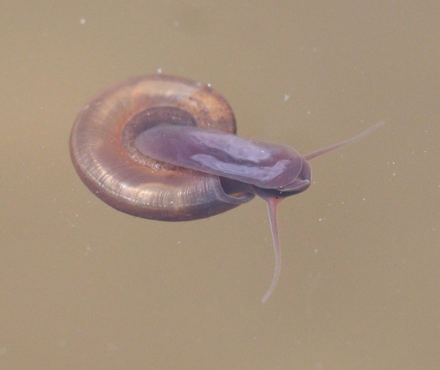
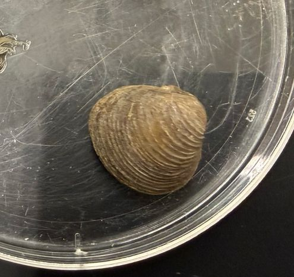
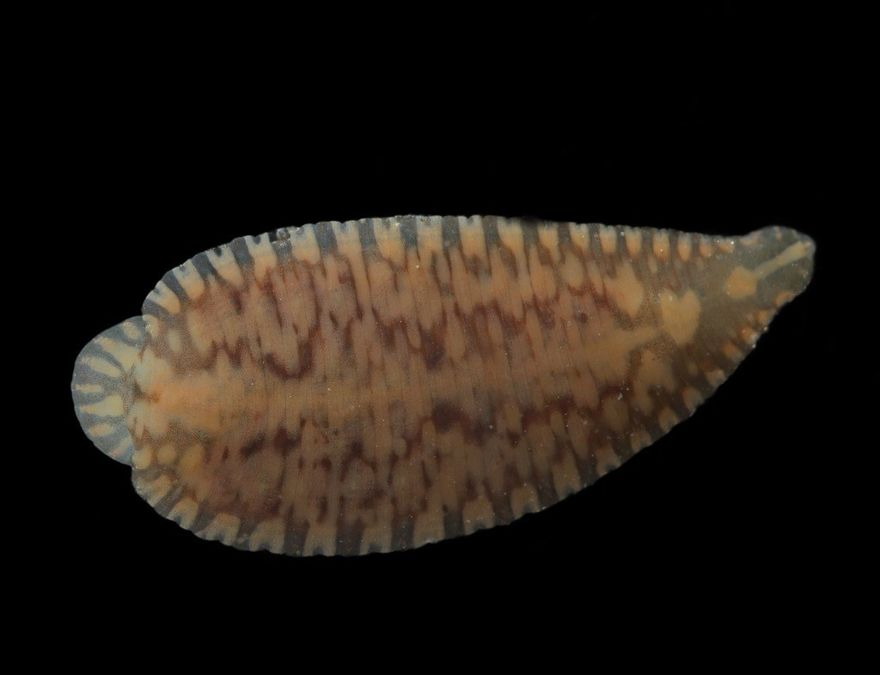
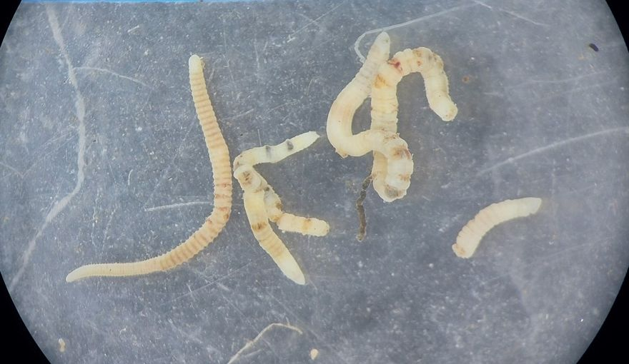
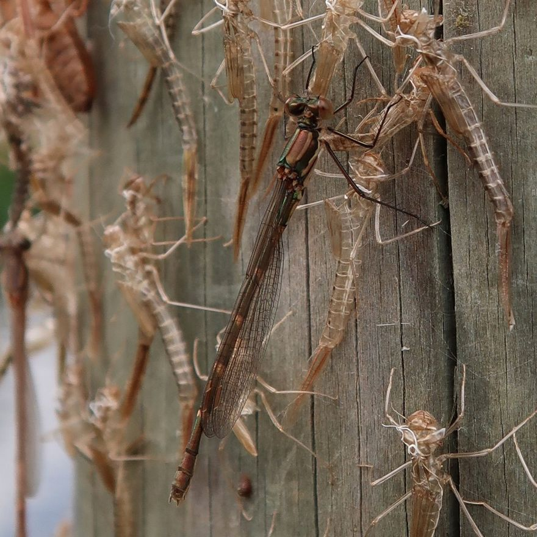
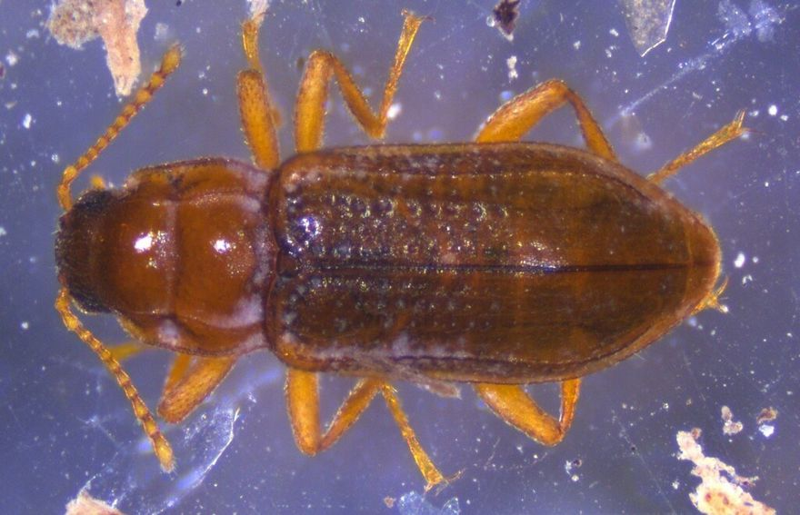
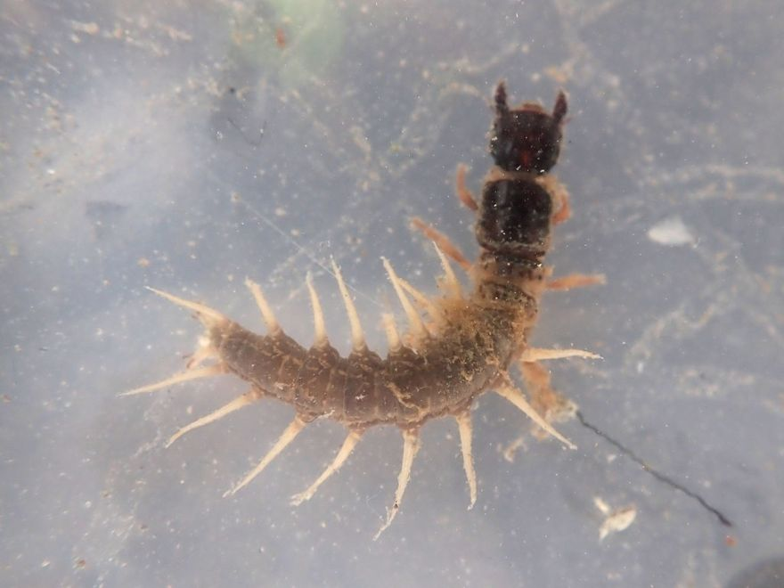
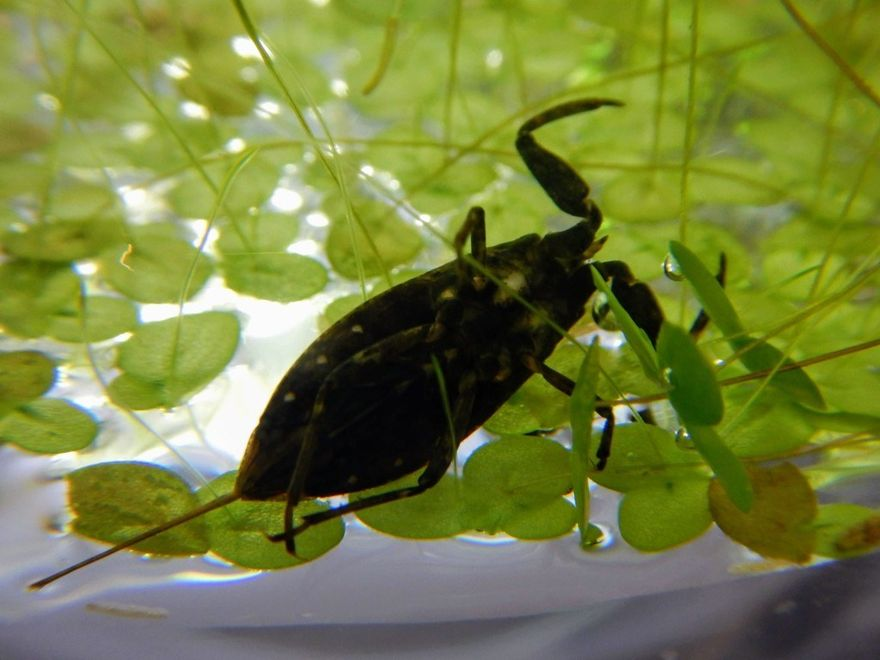
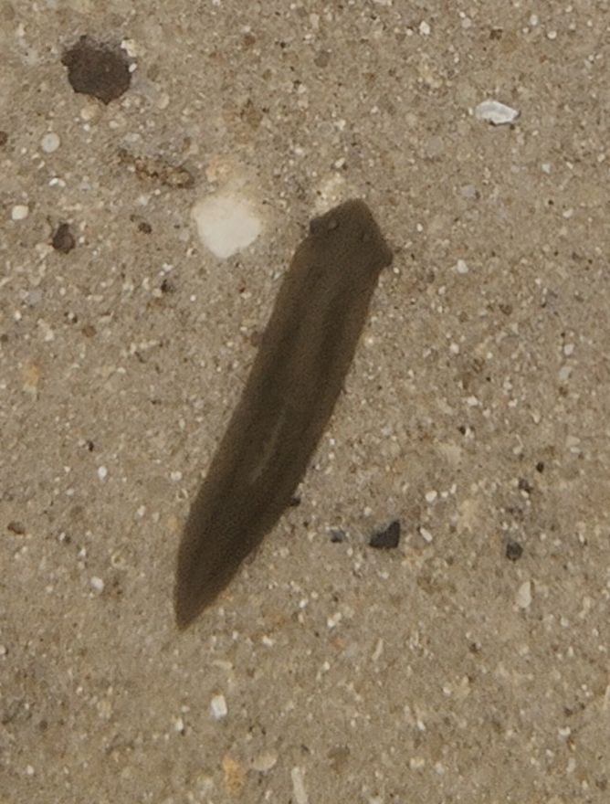
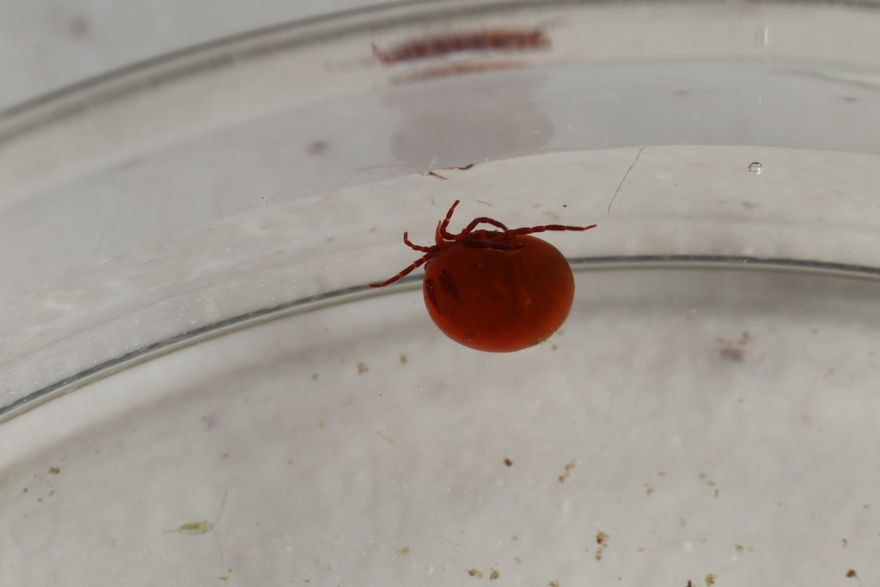
An honest note
NymphCount sorts specimens into the groups the indices need. It does not silently guess at doubtful specimens — anything it can’t settle is shown to you as unsorted, with the tray in front of you, and your call is the one that lands on the record.